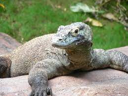
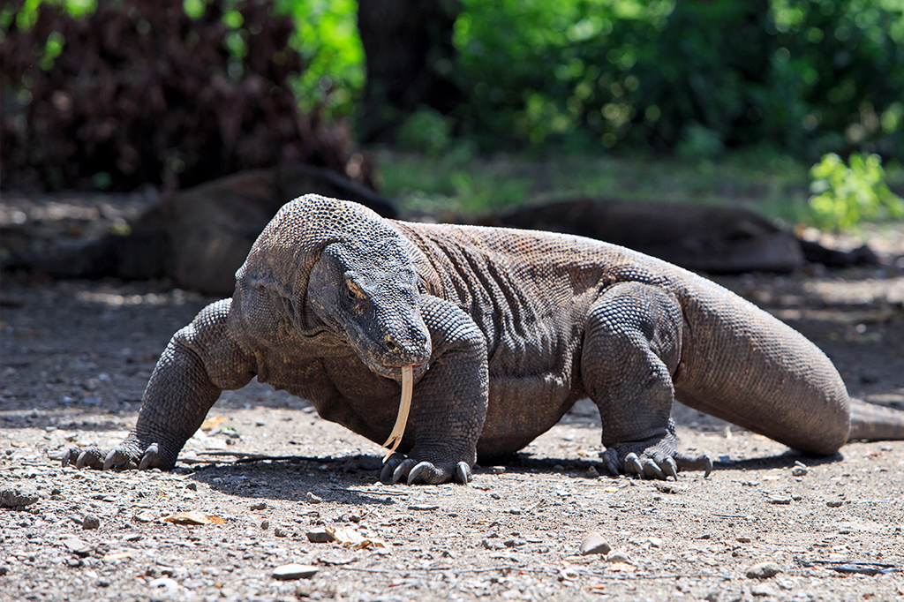

O Dragão de Komodo é considerado o maior lagarto do mundo: pode atingir três metros, e pesar até 150 quilos. Habitante das ilhas de Komodo, Rinca e Flores, do arquipélago Lesser Sunda, na Indonésia; é conhecido pelo fato de ser um exímio nadador e corredor, pela sua robustez e habilidade ao caçar. Tudo isso fica mais fácil ao se utilizar de suas fortes garras e mandíbulas.
Como este réptil se alimenta de carne em estado de decomposição, ele se utiliza de uma estratégia característica: se esconde na vegetação, aguarda a presa e, ao encontrá-la, derruba-a com a sua cauda. Após estes passos, o dragão morde sua vítima. A alta concentração de bactérias patogênicas e venenos hipertensivos e anticoagulantes contidos em sua saliva, em poucos dias, provocam a morte do animal. Como detecta pistas olfativas a grandes distâncias, é capaz de encontrar o cadáver tempos depois. O dragão é capaz de comer 80% do peso de seu corpo em uma única refeição.
